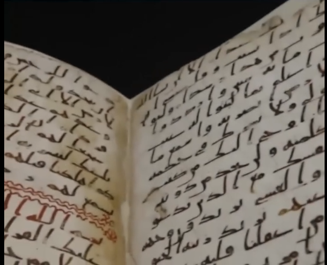
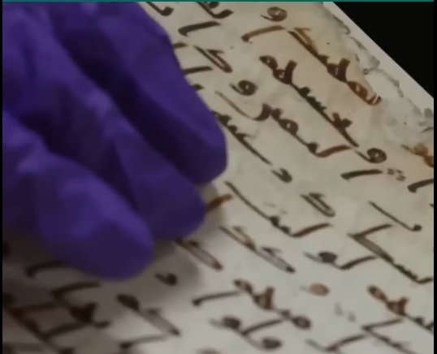
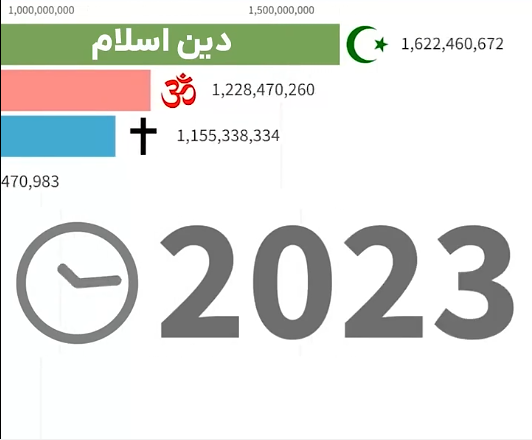

ادعای ملحد
از کجا میدونی قران فعلی همان است که بر محمد نازل شد
آیا قرآن فعلی همان است ؟
ولی شما داری میگی من
من فکرکنم حضرت محمد اینارو گفته
جواب
از اونجایی میدونیم که
سال 2015 یک نسخه خطی از قران
در دانشگاه بیرمنگام انگلستان پیدا میشه


و از طریق آزمایش علمی کربن 14
ثابت میشه مربوط به زمان پیامبره
پس از نظر علمی ثابت شده
این قرانی که دست مسلمونا هستش
دقیقا همون قرانیه که در عصر پیامبر بوده
پروفسور دیوید توماس
استاد ادیان دانشگاه بیرمنگام هم
تایید میکنه قران امروزی
دقیقا همون قرانیه که 1400 سال قبل
در بین یاران پیامبر متداول بوده
و حفظ و نگهداری میشده
اما با وجود همه این تبلیغات علیه اسلام
ما در واقعیت شاهد این هستیم که
اسلام سریع ترین دین در حال رشد در جهانه

در سراسر دنیا و مخصوصا اروپا و امریکاست
و فرق تازه مسلمانان اروپا و آمریکا با ما در اینکه
اونها با تحقیق مسلمان میشن
ولی ماها با عملکرد بد افرادی که
در لباس دین هستن و حکومت هایی که
با نام اسلام حکومت میکنن
و در واقعیت هیچ رنگ و بویی از اسلام نبردن
مخالف اسلام میشیم
میخای اسلام رو بشناسی با من نشناس
با فلان عالم و
فلان اخوند و
فلان حجت السلام و
فلان آیت الله نشناس
با قران بشناس
با قران میتونی اسلام رو بشناسی
دیگه کسی سرت کلاه نمیزاره
دیگه کسی نمیتونه با نام اسلام
جیبتو خالی کنه